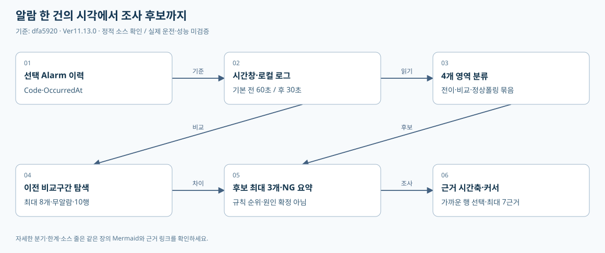

08. 알람 원인 분석: 전후 로그에서 무엇을 알 수 있는가
> 기준: A3Drilling/master · 96e22cd027c84bf302b23f2949b98985d7f301bb(Ver11.17.0). 실제 C#/XAML을 정적으로 읽었습니다. 설비 앱·Controller·벤더 DLL을 실행하거나 로그 원문을 공개하지 않았습니다.
새 기능은 알람 한 건의 시각을 기준점으로, 서로 다른 로그를 한 시간축에 놓고 조사할 후보를 골라 주는 로컬 분석 화면입니다. AI 서비스 호출이나 인과관계 증명 기능으로 읽으면 안 됩니다. 후보는 문자열·시간·영역 규칙으로 정하며 실제 원인은 원본 로그, 요청 회차, 장비 상태를 대조해 판정해야 합니다.

flowchart TD
H[Alarm 이력 한 행: Code·OccurredAt] --> D[CauseAnalysisDialog]
L[Manager의 LogDirectory] --> D
D --> W[전후 시간창: 기본 -60초 / +30초]
W --> R[Task.Run: 날짜별 로그 읽기]
R --> P[PROCESS / MELSEC / CONTEXT / INTERFACE]
R --> B[이전 구간 최대 8개에서 비교 기준 탐색]
B --> S[정규화한 signature 차이 표시]
P --> C[알람 이전 후보 최대 3개]
P --> N[NG_SUMMARY 또는 legacy Vision 실패 요약]
P --> T[근거 최대 7개 + 선택 알람 시간축]
C --> U[시간 커서로 각 표의 가장 가까운 행 선택]
T --> U
1. 화면을 여는 생산자와 받는 소비자
| 단계 | 실제 연결 | 의미 |
|---|
| 조립 | RootView → CMenuAlarm(..., LogDirectory) | 기존 LogManager의 로그 루트를 받습니다. 장치 연결을 새로 만들지 않습니다. |
| 조회 | AlarmManager의 history 결과 → ST_ALARM_HISTORY_ROW | 표시용 Time 문자열 외에 DateTimeOffset OccurredAt을 보존합니다. |
| 선택 | SelectedRow → CauseAnalysisCommand | 행 미선택·조회 중에는 명령을 비활성화합니다. |
| 팝업 | ShowCauseAnalysis → CAlarmCauseAnalysisDialog | 선택 행과 루트를 전달하고 modal 창을 엽니다. |
| 로드·종료 | Loaded에서 LoadAsync, Closed에서 Dispose | 중복 Loaded를 막고 취소 token을 정리합니다. |
근거: RootView의 Alarm 의존성 [오프라인 파일 해설], 명령·선택 행·팝업 [오프라인 파일 해설], 조회 결과에 실제 시각 보존 [오프라인 파일 해설], 팝업 수명과 취소 [오프라인 파일 해설].
2. 기준시각·시간창·파일 배치를 먼저 확인합니다
기본 시간창은 알람 전 60초·후 30초이며, 각각 0~3600 정수초로 제한합니다. 로컬 날짜별로 파일을 찾고 시각은 DateTimeOffset으로 비교합니다. 표시 시각은 LocalDateTime입니다. PC 시간대·장비시각 불일치가 있다면 숫자만 가까운 로그를 같은 사건으로 묶을 수 있으므로 시간 동기 조건을 따로 기록해야 합니다. 기본값과 기준 알람 [오프라인 파일 해설], 시간창·비동기 로드 [오프라인 파일 해설], 시간창 범위 파싱 [오프라인 파일 해설].
| 화면 영역 | 찾는 논리 폴더 | 생산하는 사건 |
|---|
| PROCESS | Sequence/<day>, Station/<day> | 단계 시작·완료·중단·실패 |
| MELSEC | Interface/MELSEC/<day> | typed I/O 명령·응답·폴링·신호 |
| CONTEXT | UI,Recipe,Setting,Product/<day>와 ProgramOpen | 조작·조건 변경·제품 상태·프로그램 시작 |
| INTERFACE | 나머지 Interface/<module>/<day> | Vision·Automation 등 다른 장치 통신 |
지원 확장자는 txt/log/csv/jsonl입니다. 확장자가 csv여도 이 분석기는 일반 테이블 CSV parser를 사용하지 않고 행 앞의 시각을 읽는 로그 parser를 적용합니다. 선택 알람은 별도 이력 객체이고, Alarm/<day>/Alarm_<day>.jsonl은 비교 기준 구간에 알람이 있었는지 검사할 때 사용합니다. 모든 Alarm 파일이 네 패널에 통째로 추가된다는 설명은 잘못입니다. 분류·파일 열거 [오프라인 파일 해설], Alarm 기준구간 검사 [오프라인 파일 해설].
파일은 공유 읽기/쓰기/삭제를 허용해 열고, 앞에서부터 읽습니다. 줄 앞의 날짜·시각이 없으면 이전 유효 시각을 상속해 예외의 여러 줄을 이어 읽습니다. 파일의 시간순 정렬을 전제로 범위 끝보다 늦은 행을 만나면 멈추며 메시지는 2000자로 줄입니다. ±500ms는 시각적 강조이고 인과 판정 범위가 아닙니다. 읽기와 메시지·시각 처리 [오프라인 파일 해설], 지원 시각 형식 [오프라인 파일 해설].
3. '정상 비교'는 정상 운전이 입증됐다는 뜻이 아닙니다
현재 분석창 바로 앞에서 같은 길이의 구간을 최대 8개 거슬러 찾습니다. Alarm 파일에서 알람이 검출되지 않고 관련 로그가 10행 이상인 첫 구간을 비교 기준으로 선택합니다. 이 조건은 공정 성공·같은 Recipe·같은 Product·동일 모드를 보장하지 않습니다. Alarm 파일이 없는 경우도 '알람을 찾지 못함'으로 취급되고, malformed JSON은 알람이 있는 것으로 보수 처리합니다. 탐색 조건과 횟수 [오프라인 파일 해설], 비교 구간 선택 [오프라인 파일 해설].
일반 로그의 비교 signature는 GUID·날짜·숫자를 정규화합니다. 정상 MELSEC 폴링은 ID와 READ/WRITE 분류를 사용하고, ID 이름에 STATE/READY/COMPLETE 같은 단어가 있으면 값을 비교합니다. 다른 아날로그 폴링값은 ANALOG로 묶습니다. 따라서 signature가 같아도 실제 오차·속도·좌표가 같다는 뜻이 아니며, 새로운 숫자 이상이 차이 표시에서 사라질 수 있습니다. 이 정규화는 비교용이며 비밀값을 안전하게 지우는 redaction 기능이 아닙니다. signature와 상태변화 규칙 [오프라인 파일 해설].
상태변화 필터는 중요 단어·비교 기준 차이·이산 신호 변화·전이 단어를 사용합니다. 정상 MELSEC 폴링은 ID와 1초 단위로 묶어 첫값→끝값으로 보여 줍니다. 빠른 0→1→0 펄스는 요약만 보면 놓칠 수 있으므로 원본 로그와 따로 비교합니다. 1초 묶음 [오프라인 파일 해설].
4. 후보·실패 요약·시간축은 각각 다른 계산입니다
| 결과 | 입력·규칙 | 의미와 한계 |
|---|
| 원인 후보 최대 3개 | 알람 이전의 패널 행. 직접 실패 150, 인터락 130, Sequence 실패 120, 통신 100, 상태변화 80, UI 조작 60, 최초 이상 40 순 | 규칙 우선순위입니다. 확률·신뢰도 점수가 아닙니다. 같은 근거행은 중복 후보에서 제외합니다. |
| Review 실패 요약 | 알람 이전 최신 `NG_SUMMARY | 구조 로그, 없으면 Review 알람에서 최근 60초 legacy Mark[...] Result` | 새 로그는 Vision 실패와 X/Y/XY 허용오차 실패를 나눕니다. legacy는 Vision 코드 기준이라 허용오차 사유를 복원하지 못합니다. |
| 시간축 | 후보와 중요 이벤트를 모아 최대 7개 근거 + 선택 알람 | PROCESS는 최대 3개, 다른 영역은 최대 2개씩. 전체 사건의 무손실 재생이 아닙니다. |
| 시간 커서 | 클릭한 후보/시간축/행의 시각 → 각 표의 가장 가까운 행 | 가까운 시각을 맞추는 UI 동작입니다. 장치 명령을 보내거나 서로 같은 요청 ID임을 보장하지 않습니다. |
근거: 후보 규칙·순위·중복 억제 [오프라인 파일 해설], 구조 NG 요약과 legacy fallback [오프라인 파일 해설], legacy 60초 범위 [오프라인 파일 해설], 시간축 선택 [오프라인 파일 해설], 표의 가장 가까운 행 동기화 [오프라인 파일 해설].
ReviewManager는 P2P/IOF/Fine 완료 지점에서 NG_SUMMARY를 생산합니다. Product의 새 메모리 필드와 ReviewResult CSV에도 NG 원인이 연결됩니다. 로그에 남는 요약·결과 CSV·Active Product의 보존 범위는 서로 다르므로 04장 12절을 함께 읽습니다. NG 요약 생산 [오프라인 파일 해설].
5. 위험도와 구체적인 후속 검증
아래 위험도는 검토 우선순위입니다. 실제 장애가 발생했다는 뜻이 아닙니다.
| 위험도 | 확인된 조건·추론되는 위험 | 합성 자료로 검증할 시나리오 |
|---|
| 높음 | 후보는 패널당 1200행 선별 이후의 자료로 계산됩니다. 알람에서 멀지만 중요한 실패는 후보에서 누락될 수 있습니다. | 알람 직전 고빈도 로그 2000행과 더 이른 직접 실패를 넣고 표시·후보·전체 원본 결과를 비교합니다. |
| 높음 | 최신 NG_SUMMARY 선택은 Recipe/Glass/Run ID로 결합하지 않습니다. 다른 작업의 요약이 가까이 있으면 잘못 연결될 수 있습니다. | 서로 다른 두 Product의 NG_SUMMARY를 교차 배치하고 선택 알람과의 연결을 확인합니다. |
| 중간 | 비교 기준은 알람 부재·10행만 검사합니다. 무알람이 정상 가공을 뜻하지 않습니다. | 정지/다른 Recipe/Alarm 파일 누락 구간을 앞에 넣고 선택 기준·설명문을 확인합니다. |
| 중간 | timestamp가 역전되면 빠른 break 뒤의 해당 구간 행을 놓칠 수 있습니다. | 날짜 경계, 파일 중간 시간 역전, 이어쓰기·잘린 마지막 행을 각각 검증합니다. |
| 중간 | 숫자 정규화·아날로그 묶음·2000자 절단이 숫자 이상이나 뒤쪽 구조 필드를 숨길 수 있습니다. | 값만 바뀐 두 로그, 짧은 펄스, 긴 NG_SUMMARY를 넣고 원본과 비교합니다. |
| 중간 | 표시 cap은 전체 읽기·메모리 cap이 아닙니다. 8개 비교구간 탐색도 추가 I/O입니다. | 큰 일일 로그에서 취소 지연·peak 메모리·동시 분석창 수를 측정합니다. |
| 중간 | 원문 메시지가 화면에 들어갑니다. signature 정규화는 원문 비밀값 제거가 아닙니다. | 공유용 스크린샷·내보내기 전 토큰/IP/계정값이 남는지 승인된 합성 자료로 점검합니다. |
첫 두 항목 근거: 전체 읽기→패널 선별→후보 분석 순서 [오프라인 파일 해설], 1200행 선택 [오프라인 파일 해설], 최신 NG_SUMMARY 조건 [오프라인 파일 해설].
이번 검증 완료 범위는 소스의 호출·필드·분기·줄 인용 확인입니다. 위 실행 시나리오는 미수행이며, 실제 현장 로그 레코드는 예제로 복제하지 않았습니다.
6. 이번 Commit의 등급 표시와 기존 알람 분석을 연결해 읽기
CAlarmCauseAnalysis·팝업·보호윈도우 알람 callback 자체는 이번 두 Commit에서 변경되지 않았습니다. 앞 절의 후보 선별·Run/Glass 상관키·시간순 파일 가정·표시 cap 한계는 기존 잔건이며 이번에 재현하거나 수정한 결함으로 세지 않습니다. 현재 인용의 실제 소스 범위를 이전 기준과 대조해 유지했습니다.
새 Review Level 색상은 현재 오차 크기를 표시하는 규칙입니다. 알람의 Vision 실패·허용오차 NG 요약이나 Product JUDGE를 대체하지 않습니다. 특히 live Review는 VisionFind NG에 Level을 표시하지 않는 반면, Review Data는 로드한 각 행의 ErrorX/Y로 Level을 계산합니다. 작은 오차의 Find NG·미측정·편집 행이 낮은 Level 색으로 보이더라도 '원인 해소'나 '새 실측 합격'이라고 판단하지 않습니다. Live의 Find NG 제외 [오프라인 파일 해설], REVIEW DATA 파일 로드의 Level 계산 [오프라인 파일 해설].
flowchart LR
E[결과 오차 X/Y] --> L[현재 Setting의 Level 색]
J[JUDGE·Vision code·NG reason] --> N[기존 NG_SUMMARY와 알람 근거]
L --> U[색상·출처·판정을 함께 확인]
N --> U
후속 검증은 같은 VisionFind NG·허용오차 NG·EDITED 결과에 대해 live·REVIEW DATA 파일 로드·NG_SUMMARY·알람 이력의 의미를 대조합니다. 이 문서의 새 등급 설명은 로그 분석의 인과관계 신뢰도나 대용량 성능을 향상시켰다는 실행 증거가 아닙니다.
이전 읽기: 06. 동시성과 로그, 07. 변경 영향 검토.